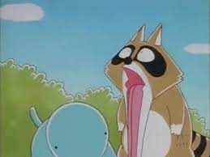

보노보노에 등장하는 라쿤. 성격은 도라에몽에 등장하는 퉁퉁이와 똑같다고 보면 된다. 둘의 공통점은 불만도 매우 많은 성격에다가 친구 때리는 것을 좋아한다는 점. 그리고 퉁퉁이가 엄마 앞에서는 꼼짝도 못하듯이 너부리도 자신의 아빠 앞에서는 꼼짝도 못하고 당하기만 하는 것 역시 닮은꼴이다. 일본판 이름은 아라이구마. 국내판 작명 센스가 넘사벽급이라 너부리라고 더 많이 불린다. 종족은 원판 이름에서 알 수 있듯이, 라쿤. 이 때문에 포로리의 언니들에게 북미너구리는 다람쥐를 잡아먹을 수 있다는 말을 하며 위협하거나 너부리의 아빠가 "나는야 래쿤너구리 래쿤너구리~" 하며 노래부르기도 하며, 자신이 숨겨둔 빨간 열매를 강물에 씻어서 먹기도 한다. 꼬리를 보면 줄무늬가 있는데 이것만 봐도 얘는 라쿤이 맞다. 너구리 꼬리에는 줄무늬가 없다. 아로리에게 응가너구리라고 불려지게 된 이유는 너부리가 포로리가 누나(언니)가 있다는 말을 듣고 갔는데 인기척이 들려서 갔는데 응가(くそ)가 있었다(...) 그래서 응가가 누나라고 생각한 너부리는 당연히 보노보노가 아니라고 반박을 하는데 갑자기 포로리의 누나가 왔는데 응가라고 말하자 아로리가 응가너구리라고 부르기 시작했고 싸움이 시작되었다(...)